L. Buechley, N. Elumeze, C. Dodson and M. Eisenberg, (2005). ‘Quilt Snaps: a fabric based computational construction kit’,. IEEE International Workshop on Wireless and Mobile Technologies in Education (WMTE’05), https://www.colorwaysbyvicki.com/snaps-quilt.html#/
Looking at this project called “Quilt Snaps: a fabric based computational construction kit” Helped me see the potential of textiles and computation.
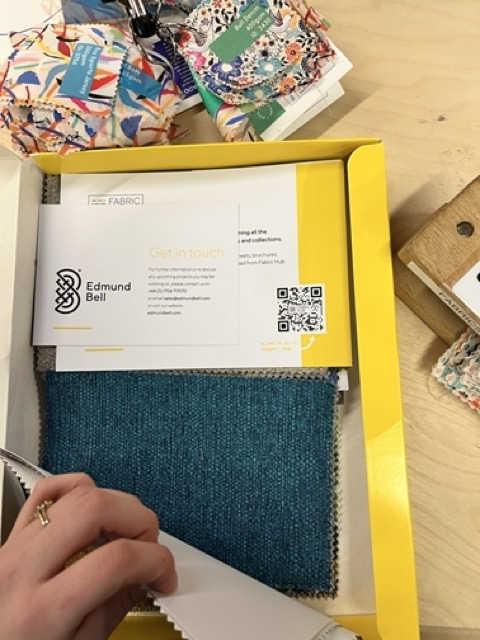
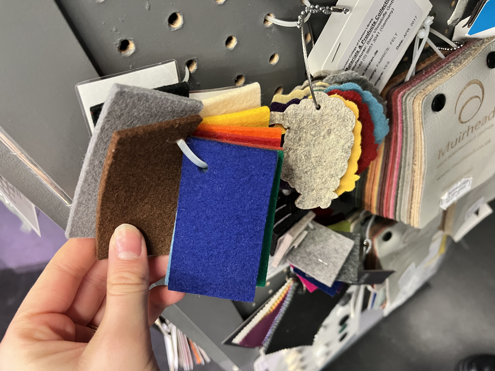
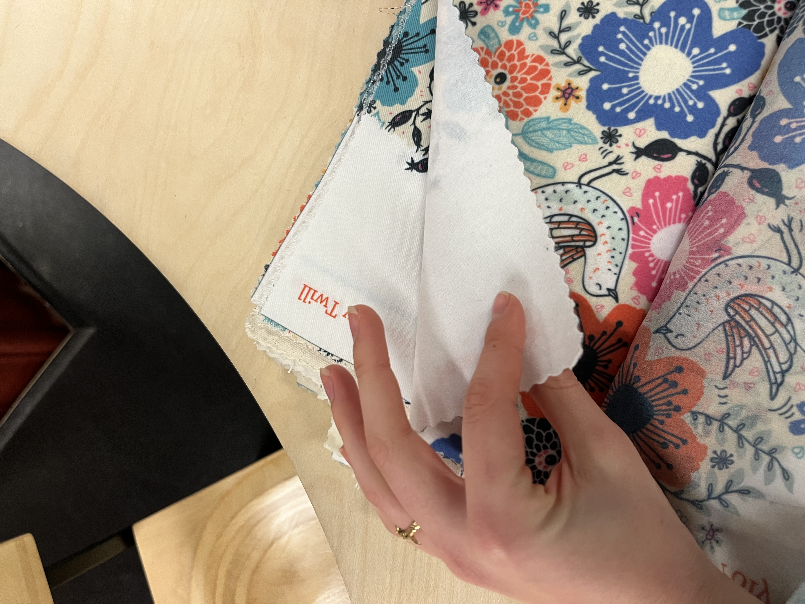
Images show research for materials at CSM library. Decided on felt for its versatility. It’s durable, doesn’t fray, is easy to cut, and generally inexpensive, so great for children.
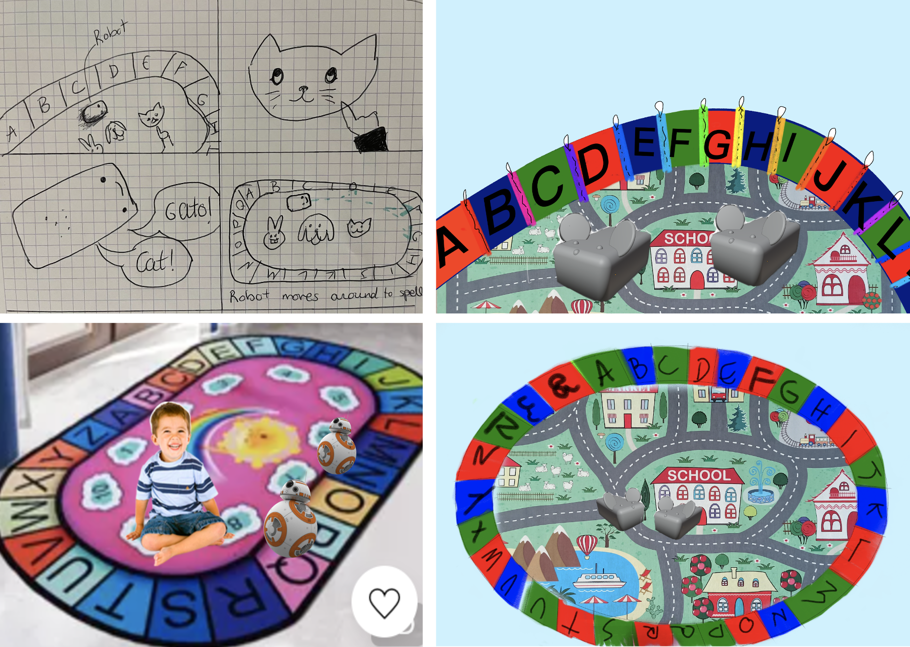
Alt text.: Images show prototype sketches and initial wireframe concepts. 1: Sketch on paper of rug. 2-4: Digital drawings and collages of the rug, 2 robots and child. Rug has an outer ring with the alphabet, centre has a map.
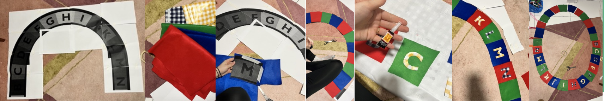
Started by printing a paper version using rasterbator.com to divide the image to print. Decided on these three colours for the felt as Arduino’s colour sensor can only distinguish from red, green and blue
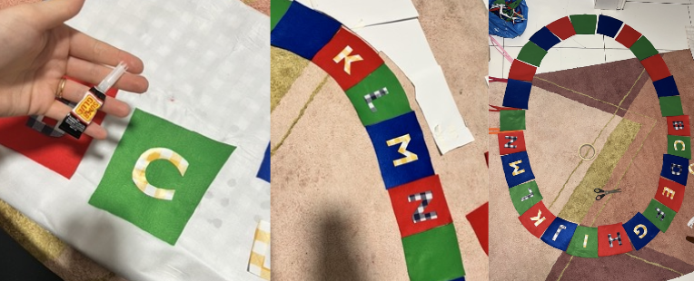
superglue was not the best option to stick the letters with, sewing or fabric glue would be better. I chose plastic material to help visually impaired children feel a clear difference between the felt and the letter.
While I was in a french class, I remembered that different languages have special characters. I thought that adding zippers would be a fun way to be able to add and change characters. After buying them, I realised that the zippers I had were not “open-end zips”. These did not allow for them to be interchangeable but they were enough to show as an example. I bought a couple of open-end zips and added them to a couple of letters as an example. Each open-end zip was 4 pounds so I decided it would be best to use the cheaper ones and just show a couple of the chunky ones as an example.
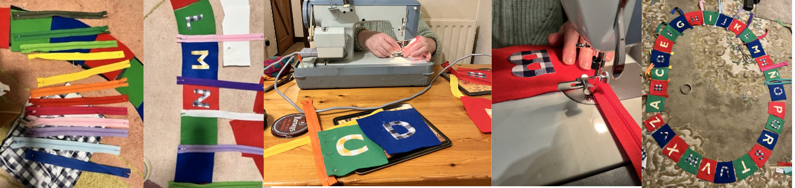
My grandma helped me sew the zippers together over Christmas. I would pin them down and then she’d sew them with the machine. Once I had the alphabet “ring” I could work further.
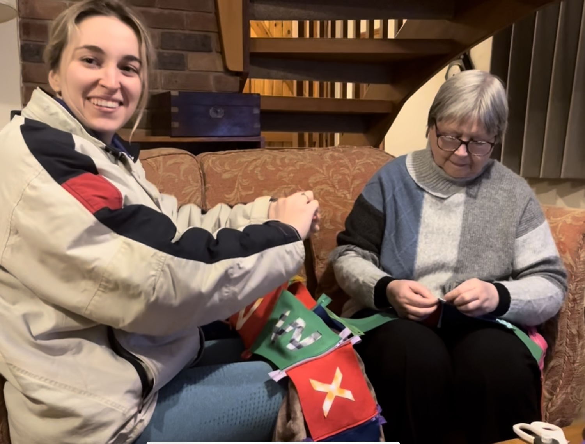
We hand-sewed the edges of the zippers so that they wouldn’t be noticeable. We made a loop and sewed the other side of the zipper to put the LED’S through. It was an easy way to include these.
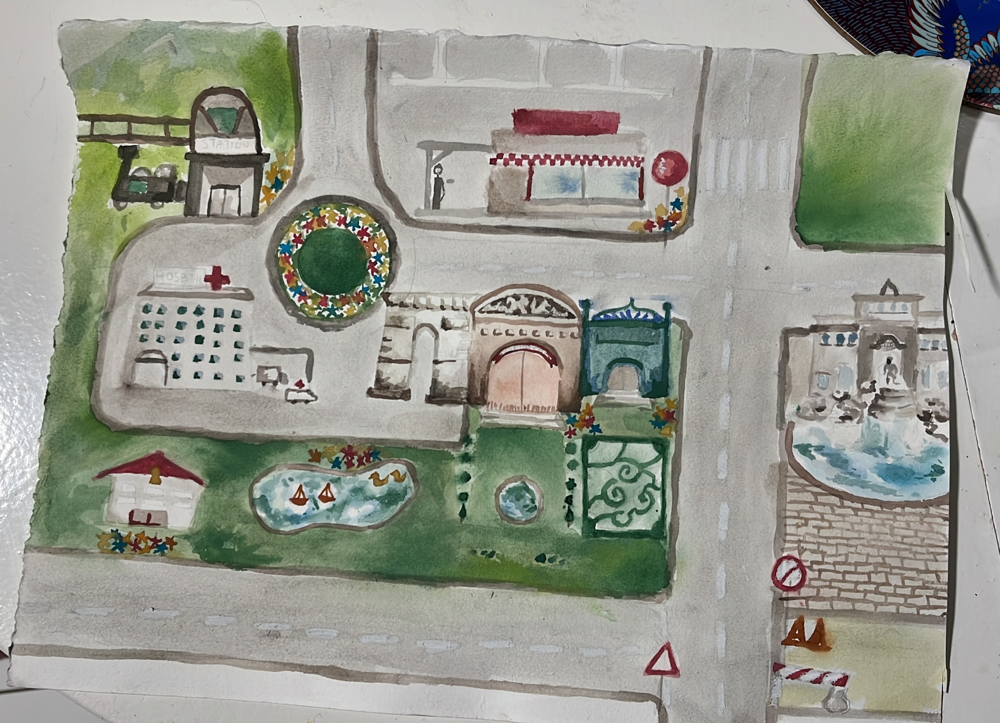
I chose to do a watercolour drawing instead of a digital drawing because I wanted the design to feel more relatable. It was more creative and unique.
I tried to incorporate little details that I found fun. The fountain on the right, for example, is the Fontana di Trevi in Rome. Also, there’s the Arc de Triumph from Paris. An imaginary panoply of landmarks.
I dislike the modern trend of giving children beige, wooden toys, but I also dislike over the top design. I thought watercolour would be a good middle ground between something wholesome and something nice to look at. I also wanted to display my creativity, so this was a fun opportunity. I scanned the image at a ual printer.

Special thanks to Anna and printing technician Kevin Potter for letting me use the CSM printers. The UV printers printed in panels, so I later went and sewed the panels together. The watercolour drawing was printed onto white felt.
I used stiff felt for the panels. This felt is used in shirt collars to stiffen up the fabric. I thought that the middle part might need to be more stable, so that’s why I chose this over normal felt.

While Kevin was having lunch I challenged myself to design some packaging. I had 35 mins and I came up with that small box on the bottom right. It wasn’t a good example of my design skills, not very sleek. I’m glad that I did it though, as I wouldn’t have made it if wasn’t for the time limit I gave myself. This made it more digestible for me to tackle the challenge.
After this, I pushed myself a bit further and went back the next day with a new design. I liked the thought of using watercolour as the background to keep up the relaxed, creative style. This style allowed me to take some creative freedoms and made errors less noticeable. If I had done a really sleek, clean design, any mistakes would have been very evident.
For example, the logo was made on a free software on my iPad. It’s not the best example of my design skills, I could have used Adobe Illustrator. The “S” is blurry. That logo was supposed to be a prototype, but I have learnt to separate my projects from my ego and make efficient decisions when necessary.

I accidentally printed the top bigger than the bottom. I cut it down a bit and it worked. But I didn’t stick it properly and you can see it in the video. I learnt about different paper types, and as you can see I printed a glossy pamphlet. A technician informed me that gloss paper was not a good idea because it creases, so I made a second version on card paper.
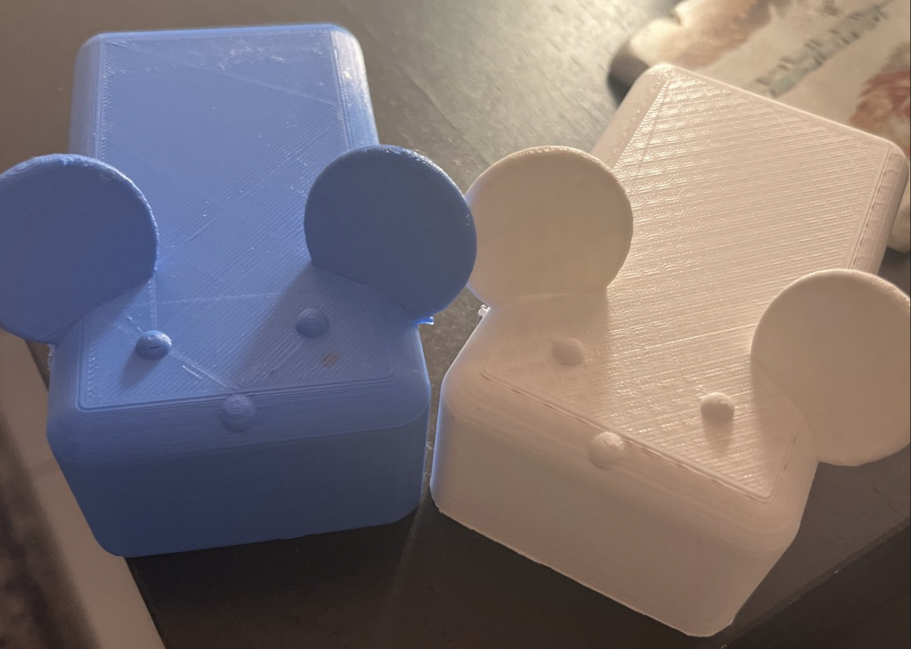
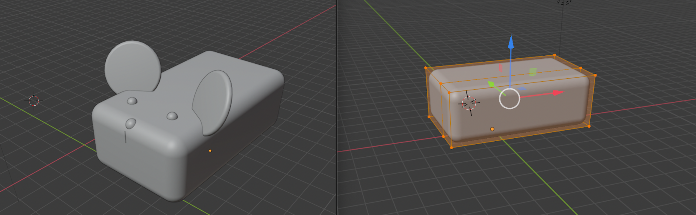
After a couple of tries, and with help from Lexin, I 3d printed the mice.
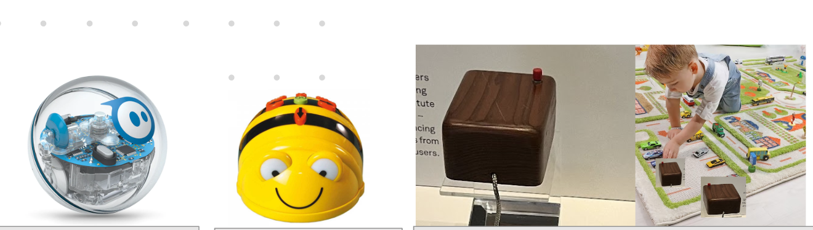
Alt text: 1. : Round sphere robot with blue logo. 2.: Bee shaped robot with buttons. 3.: image from original mouse design science museum. 4. Example idea of the mouse design as a robot on a rug with a child
1. The initial Robot design I was inspired by was the Sphero as I work with it to teach children coding. Later I realized that it would be difficult to control its movement because it’s round.
2. I liked the “beebot” shape that allowed the toy to only move front, back, left and right. This would make it easier to code and control.
3. I found this design of the original computer mouse by Douglas Engelbatt whilst looking for inspiration in the “Information Age” gallery at the Science Museum, London. (https://www.sciencemuseum.org.uk/see-and-do/information-age) This design is what ultimately inspired the mouse idea and design.
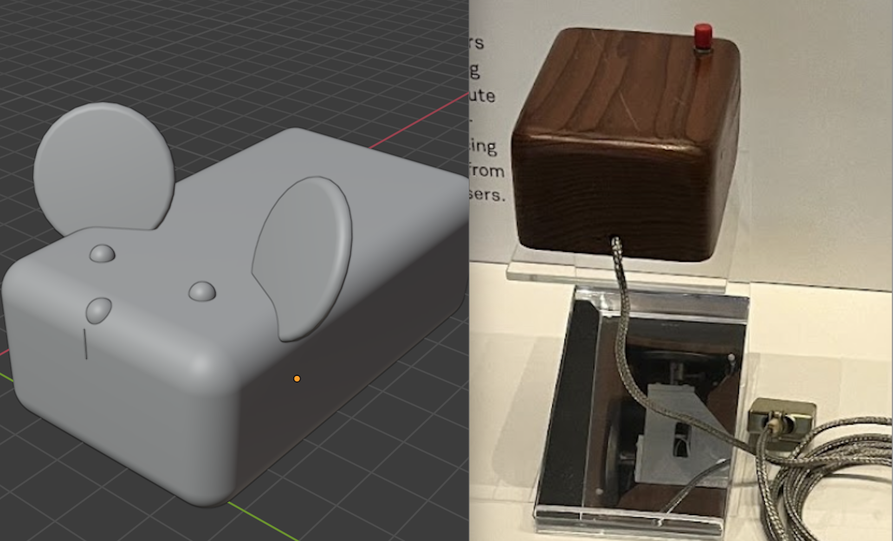
Why two robots?
Two robots will create a social factor that will keep “dramatist” learners interested. (O’Grady, 2005) The child can see them as friends. Each robot speaks a different language. I thought his will help with clarity regarding where one language stops and another starts, by having two different robots for each language.
I later realized from reading “How Children Learn language” that children don’t tend to mix up languages. From personal experience having been brought up in a bilingual household, I don’t remember being confused by mixing languages but my younger brother did for a little while. This made me think about how different children interpret new stimuli differently. I kept the two mice anyways, as I thought they were fun.
In the future, these robots will be different in colour and can even have “clothes” to interchange and dress them up. Inspired by the “beebots” above. These clothes can be culturally significant, for example, if a child is learning Spanish and English, dress one up in a flamenco dress and another in a London guard costume. It might bring up cultural appropriation concerns but I consider that it’s alright because they’re just toys. Still important to keep that in mind, though. I’d like to make similar costumes for the mice, and maybe add interchangeable 3D-printed parts, like in the mr potato toy. Like a mouth or a tail.
O’Grady, W. (2005). How Children Learn Language. Cambridge University Press.

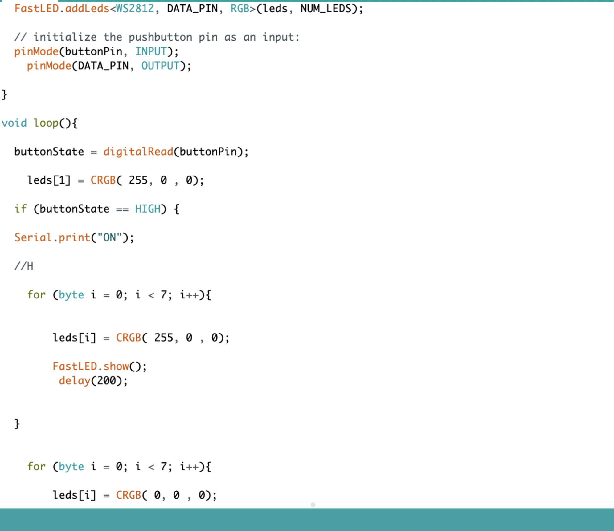
I first thought that I could use a colour sensor to track the mice’s position. As Arduino can only sense red, green or blue, I made the alphabet circle to be those colours with that in mind. The idea was that the mice would go around in circles across the alphabet and have a for loop with a counter for each colour. Each time the mouse sensed a different colour, the counter would +1. This would tell the mouse where it was. I made a mini version with the Arduino and it worked in the Serial Monitor.
I got an RGB sensor and realized that coding the LED would be more fruitful. First, I used capacitive touch sensors. The input was hard to define because when sitting on the rug, everything was an input. It was hard to distinguish the hand input from the rest of the body input. So I decided on using buttons, and these arcade buttons seemed playful and fun. Future iterations might use a motion sensor or a camera, similar to Lieven’s cars.
To get the LEDs to work, I started with a simple sketch. To turn on an LED with a button. Then, turn on an LED sequence with a button. I thought I got it working, and it looked fine, but little did I know that it was only working because I was short-circuiting. I had a tutorial with Matt and he pointed this out. The code used an IF/ELSE statement and a sequence of LEDs.
Next, I got a short neopixel string to do the same. It worked, but now I needed a longer string to cover the whole rug. I asked for one at the CCI (about 150 LEDs). I soon realised that my long strip of LEDs had some power issues. The Arduino couldn’t power it, and only a couple of LEDs turned on. I was confused for a second because my code was logically correct. I looked online and saw that I needed an external adaptor with a 5V Output.
Went back to the CCI and it worked! I got it to spell hospital, which looking back at that decision, I have mixed feelings about. Hospital is spelt the same in English and Spanish. This was good because I didn´t have to do two words, but also might have not been completely clear. I didn’t have time to change it in the studio, and it was left like that.
Lastly, I talked to Matt about using sound in the project. He suggested a DFP player that had a micro sd. This would be Serial to each TX.RX and would use 3-4 wires. I didn’t have time to continue this, but I would love to continue the Arduino side of the project in future iterations.
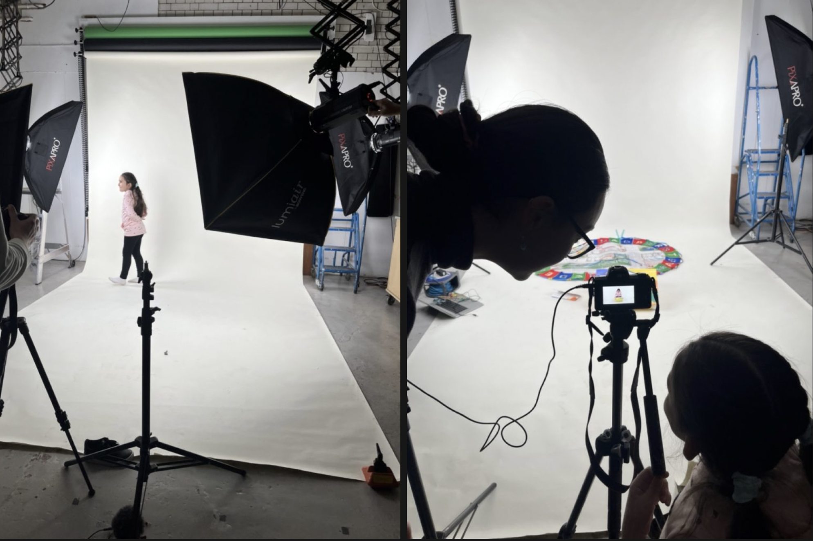
I booked the photography studio at Camberwell and a camera and microphone from the CCI. With the help of Diana, and Diana’s wonderful little sister, Kate, we made a video explaining the project. John the technician at the studio was of great help and taught us about lighting. Kate was absolutely delightful. She was patient, funny and smart. I was very lucky to be able to have her on the project. And Diana was also very sweet, bringing Kate to the CCI. We laughed a bit because we were surprised by Kate’s great acting skills, which seemingly came from nowhere.
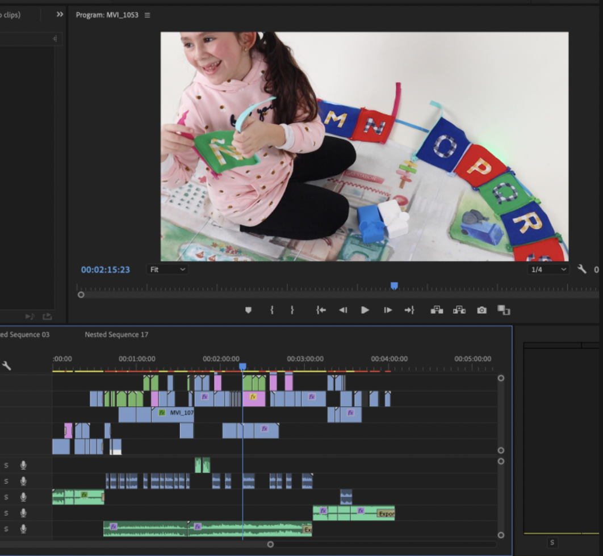
I edited the video using Premiere Pro. It was a struggle because my laptop couldn’t handle it, but with patience and many exports It turned out great.
I used a filter (Lumetri colour) to make the photography of the video more bright. I hand wrote all the text on the screen on a green canvas on my Ipad while screen recording. I used these screen recordings and, later exported them and Keyed the background out. I thought this would keep up the aesthetic, but after hours and hours of work, I realized (after receiving some feedback from my dad) that my handwriting is… illegible. I knew it was bad, but as I did the writing at some point in the AM it was worse than usual.
Going back to the bad handwriting issue. Even if it was more work, I thought that the communication of the project was half of the project. Without communicating my ideas effectively, all of the work would be undermined. So I did a voice-over for the final version to clarify. I used a Rhode mic, but sadly realised I needed a special cable to connect it to my laptop. So I recorded a video from the camera, edited out the video and kept the audio. IPhone recording is fine, but I wanted it to be great. I used the audio editor on premiere to cancel white noise and such. It’s okay, but next time I’ll use Audacity.
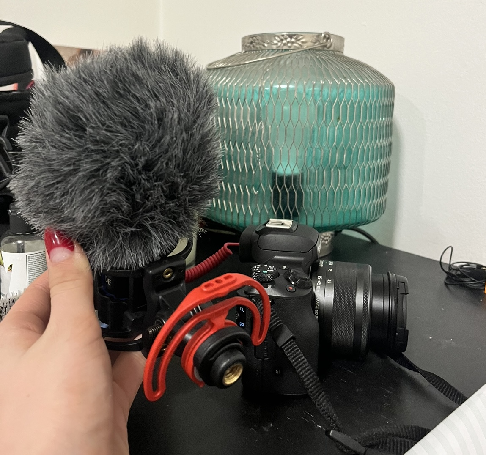
Lastly, the materials I used were from a shop in Brixton and the zippers were from Amazon. Probably not the most eco-friendly. At the CSM library, I saw these alternative felt and zipper options from sustainanableribbon. Future iterations would explore sustainability concerns further.
Just realised, what if the mice could set up games and activities where the child could interact with them… to be continued
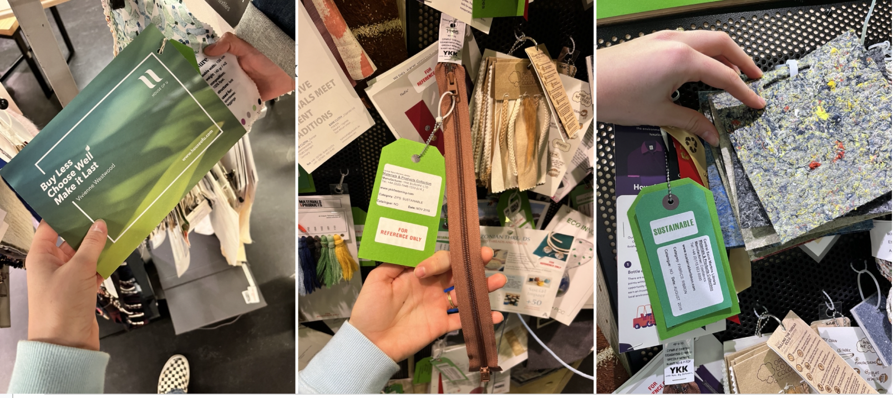
Case study examples
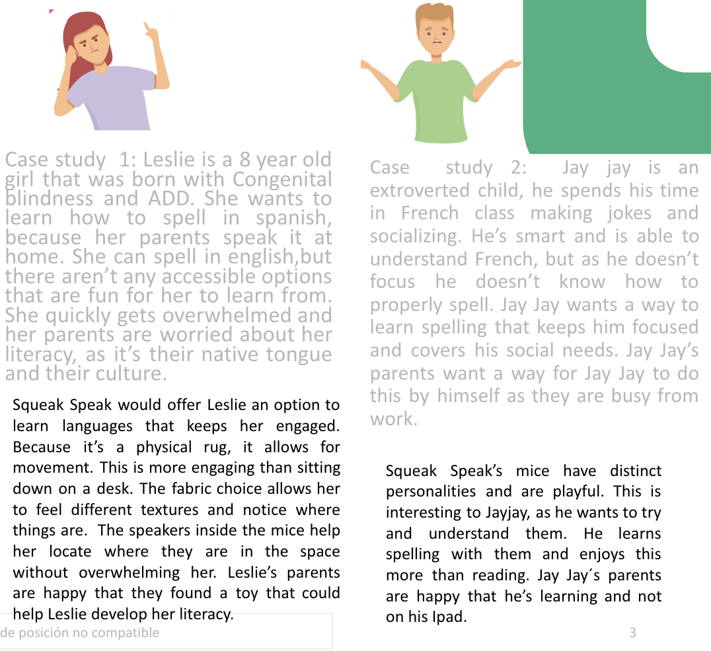